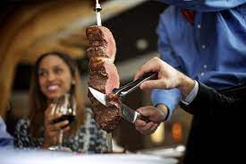

Brazilian Barbecue

Description
There are many ways to cook this beautiful cut of beef. However the most popular and traditional would be over a churrasqueira. The meat is cut into 3-4 inch thick slices and then skewered in a crescent shape on long skewers and seasoned with a Brazilian coarse sea salt.
Ingredients
Picanha
Salt
Coal
Steps
- Let the picanha sit out for at least 30 minutes at room temperature.
- Meanwhile start your wood charcoal chimney
- Pat the picanha dry with a paper towel.
- Score the fat cap vertically with a sharp knife in 1/2 inch slices then score horizontally (make sure to only score 1/2 way through the fat cap).
- Liberally rub the ariscos seasoning on both sides of the meat (you won't need any oil).
- Place the hot coals in the center of the grill. Top with the grate. Make sure the grate is clean.
- Add the picanha to the outer rim of the grill (indirect heat). Cook for 15 minutes per side with lid on rotating occasionally (check half way through to make sure the fire is not too hot).
- After the 30 minutes, place the picanha in the middle of the grill to sear for 3-5 minutes on both sides. Refer to the internal temperature guide for desired doneness.
- Remove the meat from the grill, loosely tent with foil and let rest for at least 10 minutes.
Home